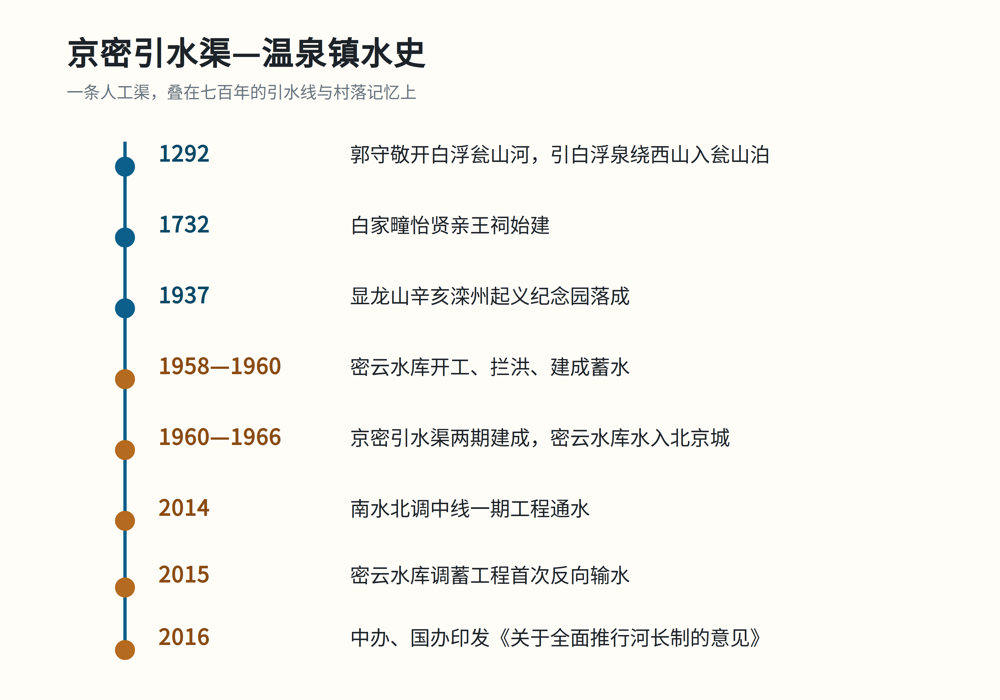

一句话结论：京密引水渠是 1960 年代修成的人工渠，却大体走在 700 年前元代白浮瓮山河的附近；它穿过温泉镇时，又把明清村落、民国纪念地和当代河长制串在了同一条水线上。
问题的提出
温泉镇的河长公示牌上写着“京密引水渠（沙河）流域”。一条人工渠为什么会被放进“沙河流域”？它和元代郭守敬的引水线是什么关系？这篇最小示例只回答一个问题：这条渠在温泉镇一带，叠着哪几层时间？
时间轴

| 时间 | 事件 | 依据 |
|---|---|---|
| 1292 | 郭守敬开白浮瓮山河 | 《郭守敬修筑白浮瓮山河》 |
| 1732 | 白家疃怡贤亲王祠始建 | 海淀文物长廊 |
| 1937 | 辛亥滦州起义纪念园落成 | 北京市文物局 |
| 1958—1960 | 密云水库开工、建成 | 中国水利报 |
| 1960—1966 | 京密引水渠两期建成 | 人民日报 |
| 2014 | 南水北调中线一期工程通水 | 人民日报 |
| 2015 | 密云水库调蓄工程首次反向输水，南水经京密引水渠入密云水库 | 中国网 |
| 2016 | 中办、国办印发《关于全面推行河长制的意见》 | 人民网 |
一、渠：新渠走老线
京密引水渠 1961 年一期建成，1966 年二期通水，全长 110 余公里，从密云水库经怀柔水库入团城湖。它常被说成“沿元代白浮瓮山河故道”。公开报道称，现代京密引水渠白浮村至昆明湖段“大体走向也基本与元代故道一致”；但这只是走向判断，不等于全线压故道，具体线位仍需学术考证。(人民日报；文摘报)
二、镇：泉、祠、码头
白家疃有始建于雍正十年（1732）的怡贤亲王祠；太舟坞有黑龙潭及龙王庙，据当地记述因元代白浮瓮山河码头得名。(海淀文物长廊；北京市政府；海淀区文旅局)
信史、争议与传说
- 较可靠：密云水库与京密引水渠的时间线、辛亥滦州起义纪念园、怡贤亲王祠。
- 需要限定：“沿故道”只在“大体走向”的意义上成立；具体线位仍需学术考证。
- 地方记忆/争议：曹雪芹徙居白家疃属于地方记忆或红学争议，需与志书、文物名录分开看。(新浪新闻)
参考资料
- 运行60年，这条渠更年轻 — 人民日报，2026-06-10。
- 郭守敬修筑白浮瓮山河 — 文摘报，2025-07-30。
- 怡贤亲王祠 — 海淀区文旅局，2020-01-25。
- 御碑守望古莲池 — 北京市政府，2026-09-10。
- 贤王祠与曹雪芹小道 — 北京日报/新浪，2013-11-11。
- 密云水库：新中国水利史上的一座丰碑 — 中国水利报，2020-09-03。
- 中办国办印发《关于全面推行河长制的意见》 — 人民网，2016-12-11。
- 2023年度海淀区文物保护单位名录 — 海淀区文旅局。